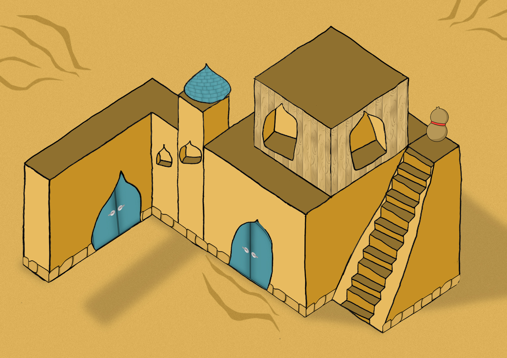
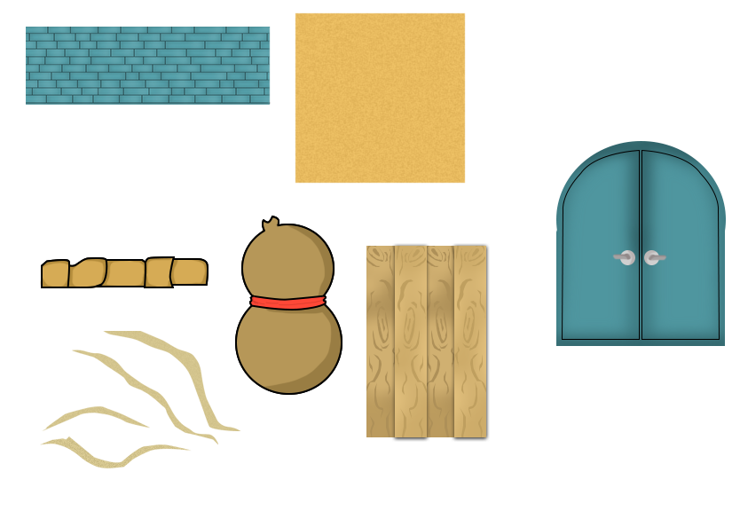
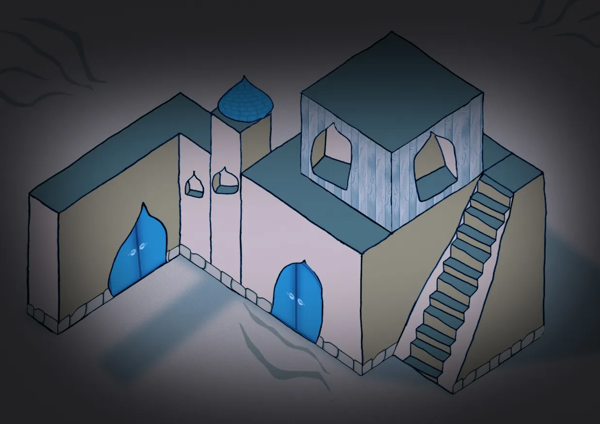
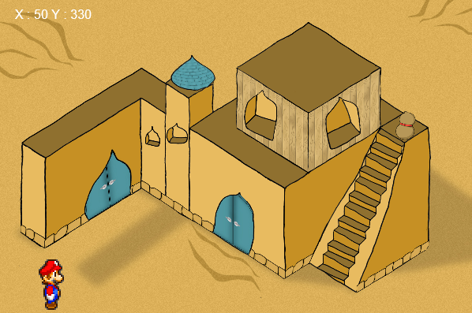

L'objectif était de créer un jeu narratif en 2D développé avec JavaScript, incluant une contrainte d'évolution visuelle. Le joueur doit récupérer des gourdes pour progresser. À chaque objet ramassé, l'environnement s'assombrit, modifiant l'expérience sensorielle. Le défi final est de s'échapper de cet univers oppressant

Aperçu de l'environnement de départ. Le level design a été conçu pour guider le joueur naturellement vers les objectifs

Création des assets 2D, gourdes, items et textures personnalisées pour correspondre à l'identité visuelle du projet

Rendu final de l'atmosphère après collecte. Le travail sur les filtres et la lumière accentue le sentiment d'urgence

Découvrez les mécaniques de jeu et l'évolution de l'ambiance en vidéo